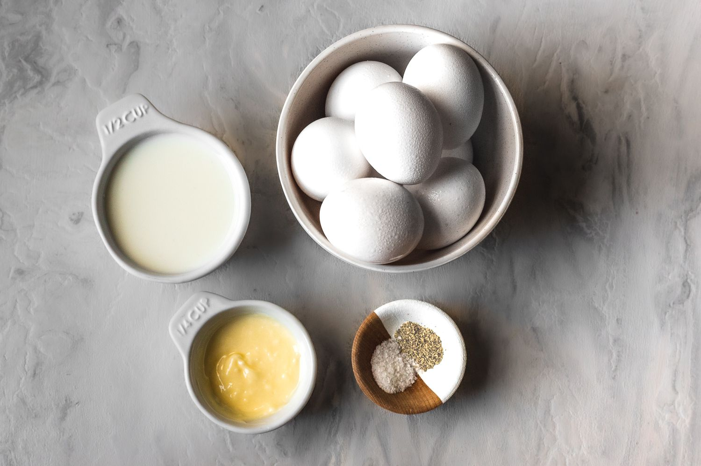

Scrambled Eggs

Description
There's nothing quite like waking up to the comforting aroma of perfectly scrambled eggs—soft, fluffy, and bursting with flavor. Our scrambled eggs recipe is an absolute classic that will elevate your breakfast game to new heights. With just a handful of simple ingredients and a quick cooking process, you'll have a plate of delectable eggs ready to enjoy in no time.
To start, crack fresh eggs into a bowl and whisk them until the yolks and whites are beautifully blended. Add a splash of milk for extra creaminess, and season with a pinch of salt and freshly ground pepper. Heat a non-stick pan over medium-low heat and melt a knob of butter, allowing it to coat the surface evenly. Pour the egg mixture into the pan, and as the edges begin to set, gently stir the eggs with a spatula, creating soft curds. The key here is to keep the heat gentle, ensuring your scrambled eggs remain tender and never overcooked
In just a matter of minutes, your scrambled eggs will be ready to plate. Garnish with a sprinkle of chives or parsley for a burst of freshness, and serve them alongside buttered toast or a stack of fluffy pancakes. With every luscious bite, you'll experience the perfect harmony of creamy textures and delightful flavors, making these scrambled eggs a breakfast favorite that will brighten your mornings.
Ingredients
- Fresh eggs (2 to 3 per serving)
- Milk (1 tablespoon per egg, optional)
- Butter (1 tablespoon per serving)
- Salt and freshly ground pepper to taste
- Chives or parsley for garnish (optional)
Steps
- Prepare the Eggs: Crack the desired number of fresh eggs into a mixing bowl. For a richer texture, you can add a tablespoon of milk per egg, but this step is optional.
- Whisk the Eggs: Using a fork or a whisk, beat the eggs until the yolks and whites are fully combined. This step will create a smooth and uniform mixture for your scrambled eggs.
- Season to Taste: Add a pinch of salt and a dash of freshly ground pepper to the egg mixture, adjusting the seasoning according to your preference. Don't overdo it, as you can always add more later.
- Heat the Pan: Place a non-stick pan over medium-low heat and add a tablespoon of butter. Allow the butter to melt and coat the pan evenly, ensuring the eggs won't stick during cooking.
- Cook the Eggs: Pour the whisked egg mixture into the pan. As the edges begin to set, use a spatula to gently stir the eggs, creating soft curds. The key is to keep the heat gentle and avoid cooking the eggs too quickly.
- Monitor Texture: Continue stirring occasionally until the eggs reach your desired level of doneness. Be careful not to overcook them, as this can result in dry and rubbery eggs.
- Garnish and Serve: Once the scrambled eggs are soft, fluffy, and cooked to perfection, remove the pan from the heat. If desired, garnish with chopped chives or parsley for an added touch of freshness.
- Enjoy Your Scrambled Eggs: Plate the scrambled eggs and serve them hot. They pair wonderfully with buttered toast, hash browns, or a side of fresh fruit. Sit back, savor every delightful bite, and relish the simple yet satisfying flavors of these classic scrambled eggs.